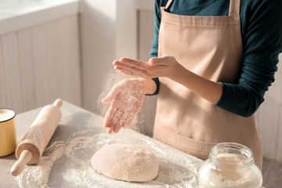
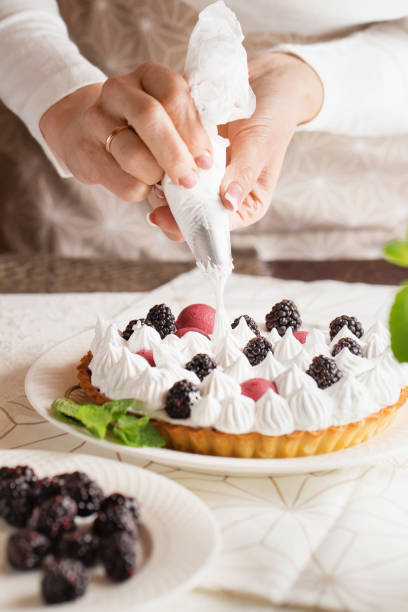
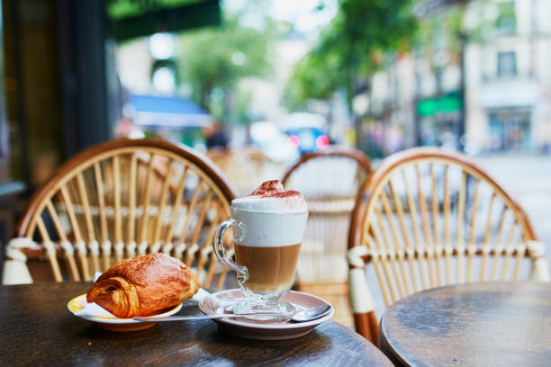

Maria Leoni era uma mulher forte e resiliente. Após um divórcio doloroso, ela se viu criando três filhos pequenos sozinha. As noites eram longas, e as contas se acumulavam. Mas Maria tinha um sonho: abrir sua própria padaria. Com coragem e determinação, Maria começou sua jornada. Ela estudou receitas antigas, aprendeu os segredos da massa perfeita e mergulhou na tradição italiana. Sua cozinha se transformou em um laboratório de amor e farinha. Ela amassava a massa com as mãos calejadas, imaginando o aroma do pão fresco que em breve encheria sua padaria.
|  |  |
|
As crianças, embora jovens, também se envolveram. Luca, o mais velho, ajudava a organizar os ingredientes. Sofia, a do meio, provava cada criação com olhos brilhantes. E o pequeno Marco, com apenas cinco anos, fazia desenhos de pães e bolos, colando-os na parede da cozinha. Maria economizou cada centavo. Ela vendia pães caseiros na feira local, e as pessoas logo se apaixonaram pelo sabor autêntico. Ela investiu em um pequeno espaço no centro da cidade e chamou sua padaria de "La Dolce Vita". As paredes eram amarelas, e o aroma de pão recém-saído do forno flutuava pelo ar. Os moradores da cidade se reuniam na "La Dolce Vita". Maria servia cannoli recheados com creme de ricota, biscotti crocantes e focaccia macia. As mesas de madeira estavam sempre cheias, e as risadas ecoavam pelas paredes. Maria sabia que havia criado algo especial.
|  |  |
Com o tempo, a padaria se expandiu. Maria contratou outros padeiros e confeiteiros. Ela abriu filiais em cidades vizinhas. As pessoas vinham de longe para provar suas delícias. Maria não apenas ganhou dinheiro, mas também o coração de todos que entravam na "La Dolce Vita". Ela nunca esqueceu suas lutas. À noite, quando fechava a padaria, olhava para as fotos dos filhos na parede. Luca agora era um chef talentoso, Sofia estudava gastronomia e Marco continuava desenhando pães. Maria sorria, sabendo que havia dado a eles algo mais valioso do que riqueza: a paixão pela comida e a força para superar qualquer obstáculo. Hoje, a "La Dolce Vita" é uma marca conhecida em toda a Itália. Maria Rossi, a mulher solitária que amassava a massa com as mãos calejadas, tornou-se uma lenda. Seu legado vive não apenas nos pães e doces, mas também na história de superação que inspira a todos. E assim, Maria Rossi provou que, às vezes, a vida nos leva por caminhos inesperados. E, com amor, farinha e determinação, podemos criar algo incrível a partir das migalhas da adversidade.